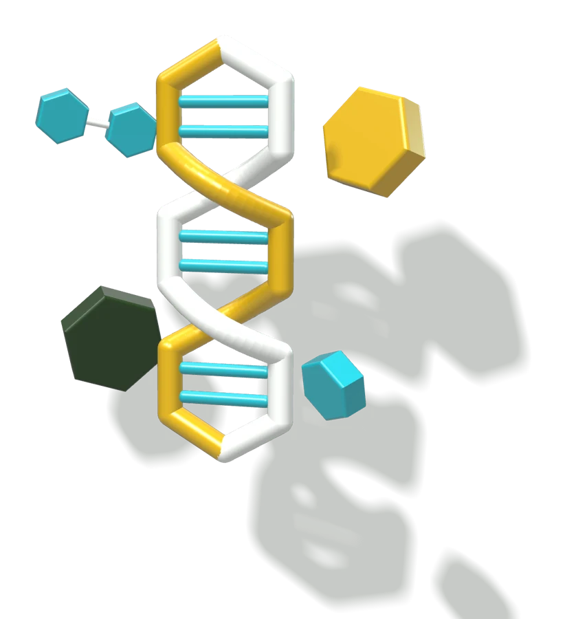
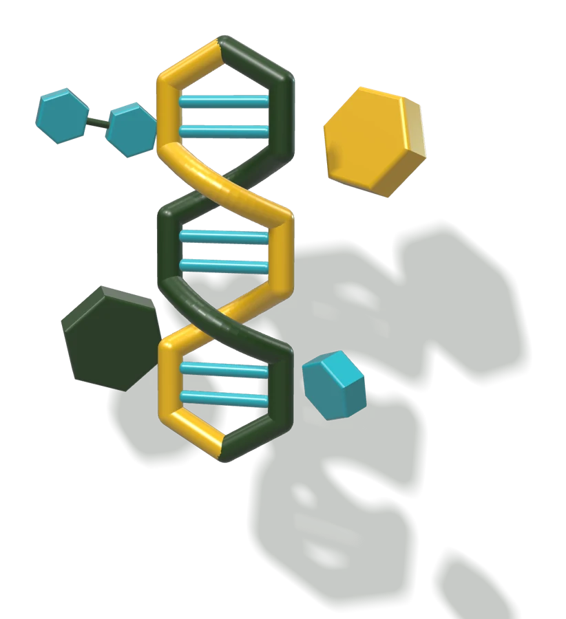
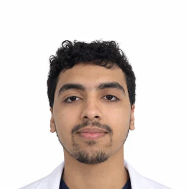
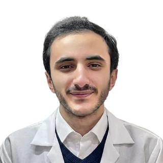
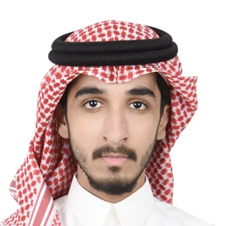
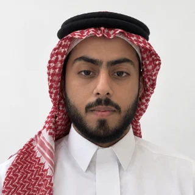

سمات: من نتيجة الفحص إلى قرارٍ مستنيرSIMAT: from a screening result to an informed decision
سمات برنامج وطني مقترح يبني مسارًا رقميًا لما بعد نتائج الفحوص الوراثية، أيًّا كان الفحص ومن أجراه من أفراد الأسرة. يبدأ بالثلاسيميا بيتا وفقر الدم المنجلي لأنهما الأقرب والأسهل تطبيقًا، ويعمل فوق الفحوص التي تموّلها الدولة اليوم بدل أن ينشئ برنامجًا جديدًا.SIMAT is a proposed national programme that builds a digital pathway for what happens after a genetic test result, whatever the test and whichever family member had it. It starts with β-thalassaemia and sickle cell disease, the closest and simplest to begin with, and runs on top of the testing the state already funds rather than creating a new programme.
سِمات: الصفات التي نرثهاSIMAT: the traits we inherit
«سِمات» جمع «سِمة»، وهي الصفة التي تميّز الشيء وتُعرف بها. اخترنا الاسم لأن الصفة الوراثية، كصفة الثلاسيميا أو صفة الخلايا المنجلية، ليست مرضًا، بل معلومة عن الأسرة تنتقل عبر الأجيال.“Simat” is the plural of “sima”, the trait by which something is known. We chose it because a genetic trait, such as the β-thalassaemia or sickle-cell trait, is not a disease. It is information about a family, carried across generations.
حين تُفهم هذه المعلومة جيدًا تصبح أداة للقرار لا مصدرًا للقلق. وفي شعار سمات يقوم الحلزون الوراثي مقام الألف، لأن كل شيء في المنصة يبدأ من تلك المعلومة.Understood well, that information becomes a tool for deciding rather than a source of worry. In the SIMAT mark the helix stands in for the alif, because everything in the platform starts from that information.

أن تصل كل نتيجة فحص وراثي في المملكة إلى فهمٍ واضح وقرارٍ مستنير، للفرد ولأسرته.Every genetic screening result in the Kingdom reaches clear understanding and an informed decision, for the person and their family.
أن نبني طبقة رقمية آمنة وغير توجيهية فوق الفحوص الوراثية التي تُجرى في المملكة: تشرح النتيجة، وتربط الأسرة، وتقيس ما يحدث بعدها.To build a safe, non-directive digital layer on top of the genetic testing already done in the Kingdom: one that explains the result, connects the family, and measures what happens next.
الفحص قائم. ما بعده متفرّق.Screening exists. What follows is fragmented.
بين 2011 و2018 أجرى 1,871,184 شخصًا الفحص قبل الزواج، ووُجد الهيموغلوبين S لدى 4.7% منهم وصفة الثلاسيميا بيتا لدى 1.2%. كل واحد من هؤلاء يحمل معلومة تهمّ أسرته.Between 2011 and 2018, 1,871,184 people completed premarital screening; 4.7% had haemoglobin S and 1.2% had the β-thalassaemia trait. Each of them holds information that matters to their family.
- الاستشارة تُقدَّم عند إصدار الشهادة للزوجين المعرّضين للخطر، ولا يوجد مسار منظّم للأسئلة اللاحقة.Counselling is offered to at-risk couples when the certificate is issued; there is no structured path for later questions.
- أقارب الحامل للصفة، وهم الأكثر احتمالًا لحملها، لا تصلهم المعلومة بطريقة آمنة.A carrier’s relatives, the people most likely to carry the trait too, are not reached in a safe way.
- نتيجة الصفة لدى المولود تعني أن أحد الوالدين حامل على الأقل، ولا يتبعها مسار للأسرة.A trait result in a newborn means at least one parent is a carrier, and no family pathway follows it.
- ما يحدث بعد النتيجة لا يُجمع في مسار واحد قابل للقياس على مستوى البرنامج.What happens after the result is not gathered into one pathway that can be measured at programme level.
خمس قيم تحكم كل شاشةFive values that govern every screen
غير توجيهيةNon-directive
نعرض الخيارات كلها بالوزن نفسه. القرار لصاحبه.Every option carries equal weight. The decision belongs to the person.
الخصوصية أولًاPrivacy first
أقل قدر من البيانات، داخل المملكة، وبموافقة لكل إجراء.The least data needed, inside the Kingdom, with consent for each action.
الإنسان قبل الآلةPeople before software
المنصة تتولّى الروتين، والمستشار يتفرّغ لمن يحتاجه.The platform handles the routine so counsellors can focus on those who need them.
الصدق في البياناتHonest data
كل رقم له مصدر، وكل محاكاة مُعلَّمة بأنها محاكاة.Every number has a source; every simulation is labelled as one.
عدالة الوصولFair access
العربية أولًا، ومن الهاتف، وفي كل منطقة.Arabic first, from a phone, in every region.
كيف تخدم سمات أهدافًا معلنةHow SIMAT serves published goals
لكل برنامج وطني ذي صلة: هدفه المعلن، وما تضيفه سمات، والمؤشر الذي نقترح قياسه.For each related national programme: its stated goal, what SIMAT adds, and the indicator we propose to measure.
| البرنامجProgramme | هدفهIts goal | ما تضيفه سماتWhat SIMAT adds | مؤشر نقترح قياسهIndicator we propose |
|---|---|---|---|
| برنامج الجينوم السعوديSaudi Genome Program | الحد من الأمراض الوراثية باستخدام تقنيات الجينوم، أُطلق عام 2018 ضمن رؤية 2030.Reduce the incidence of genetic disease using genomic technologies; launched in 2018 under Vision 2030. | تحويل النتائج إلى قرارات أسرية مستنيرة وفحصٍ للأقارب، مع بيانات نتائج مُجمَّعة غير معرِّفة.Turns results into informed family decisions and relative testing, with aggregated, de-identified outcome data. | نسبة الأقارب المفحوصين خلال 90 يومًاRelatives tested within 90 days |
| برنامج الزواج الصحيHealthy Marriage Program | الفحص والاستشارة الوراثية للمقبلين على الزواج، إلزامي منذ 2004.Screening and genetic counselling before marriage; mandatory since 2004. | استشارة منظّمة بالعربية تستمر بعد الشهادة، وتمتد إلى أقارب كل حامل للصفة.Structured Arabic counselling that continues after the certificate and extends to every carrier’s relatives. | معدل القرار المستنيرInformed-decision rate |
| برنامج فحص حديثي الولادةNewborn Screening Program | الكشف المبكر عن اضطرابات المواليد، قائم منذ 2005.Early detection of disorders in newborns; running since 2005. | مسار للأسرة بعد نتيجة الصفة لدى المولود، يبدأ بفحص الوالدين.A family pathway after a newborn trait result, starting with testing both parents. | نسبة الوالدين المفحوصين بعد نتيجة المولودParents tested after a newborn result |
| برنامج تحول القطاع الصحيHealth Sector Transformation Program | رعاية صحية رقمية ووقائية ضمن رؤية 2030.Digital, preventive healthcare under Vision 2030. | مسار رقمي قابل للقياس لما بعد النتيجة، يتكامل مع الأنظمة الوطنية.A measurable digital post-result pathway that integrates with national systems. | الزمن من النتيجة إلى الاستشارةTime from result to counselling |
هذا الجدول يصف كيف تخدم سمات أهدافًا معلنة، ولا يدّعي انتماءً إلى أي برنامج أو اعتمادًا منه.This table describes how SIMAT serves published goals. It does not claim membership of, or endorsement by, any programme.
من يملك، ومن يشغّل، وماذا تقدّم المنصةWho owns it, who runs it, what the platform provides
نموذج مقترح للنقاش، ولم يُعتمد من أي جهة.A proposal for discussion; it has not been adopted by any authority.
- يحدد السياسات ومؤشرات الأداءSets policy and performance indicators
- يعتمد الأدلة السريرية ومحتوى الاستشارةApproves clinical rulebooks and counselling content
- يملك البيانات ويحكم مشاركتهاOwns the data and governs its sharing
- يديرون عيادات الاستشارة والمختبراتRun counselling clinics and laboratories
- يتابعون قوائم الفرز والمواعيد محليًاManage triage queues and appointments locally
- يحيلون الحالات إلى المراكز التخصصيةRefer cases to specialised centres
- بوابة المستفيد ولوحة الجهة ومساحة العمل السريريةCitizen portal, authority console and clinical workspace
- استضافة داخل المملكة وفق نظام حماية البياناتHosted in the Kingdom under the data protection law
- ربط بالأنظمة الوطنية عبر واجهات معتمدةConnects to national systems through approved interfaces
ثلاث مراحل، كل منها تُقاس قبل التاليةThree phases, each measured before the next
المرحلة الأولى · تجربة في تجمّع صحي واحدPhase 1 · Pilot in one health cluster
الثلاسيميا بيتا وفقر الدم المنجلي، لحاملي الصفة والأزواج المعرّضين للخطر بعد الفحص قبل الزواج. قياس المؤشرات مقابل خط أساس.β-thalassaemia and sickle cell disease, for carriers and at-risk couples after premarital screening. Indicators measured against a baseline.
المرحلة الثانية · توسّع إقليميPhase 2 · Regional expansion
إضافة مسار نتيجة المولود، وتجمّعات أكثر، وشبكة مستشارين مشتركة بين التجمّعات.Add the newborn-result pathway, more clusters, and a counsellor network shared across clusters.
المرحلة الثالثة · تغطية وطنيةPhase 3 · National coverage
جميع التجمّعات، وتقارير مُجمَّعة غير معرِّفة للبرامج الوطنية، وأدلة سريرية جديدة يعتمدها مالك البرنامج.All clusters, aggregated de-identified reporting to national programmes, and new clinical rulebooks approved by the programme owner.
فريق سماتTeam SIMAT
اسم فريقنا: DiploidyOur team: Diploidy

Ahmed Binafef
طالب طبMedical student
Abdelrahman Alzeer
طالب طبMedical student
Haidarah Alghmri
طالب طبMedical student
Mohammed Alaidarous
طالب طبMedical studentسمات برنامج وطني مقترح من فريق طلابي ضمن MEDATHON 2026. لا يتبع لوزارة الصحة ولا لبرنامج الجينوم السعودي ولا لأي جهة حكومية، ولا يتحدث باسم أيٍّ منها. كل ربط بالأنظمة الحكومية في النماذج محاكاة.SIMAT is a proposal by a student team at MEDATHON 2026. It is not affiliated with the Ministry of Health, the Saudi Genome Program or any government body, and does not speak for any of them. Every government-system connection in the demos is simulated.